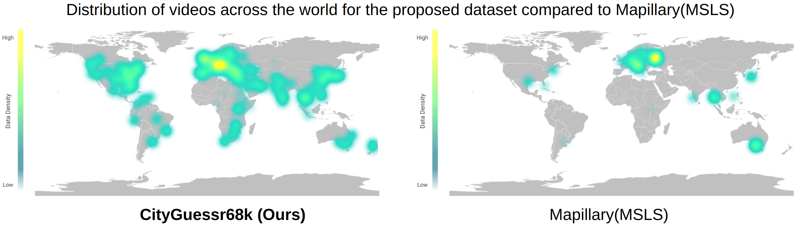
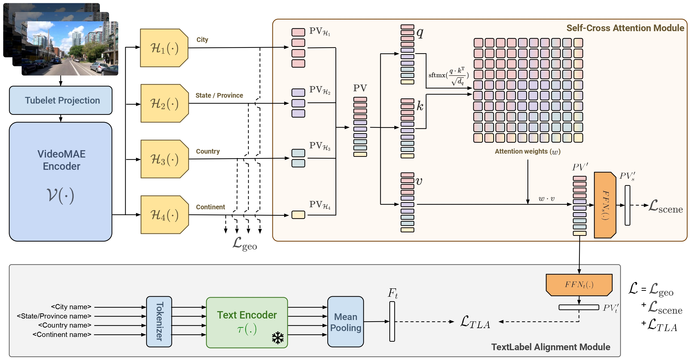
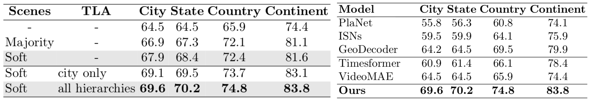

This webpage is work under progress.

The CityGuessr68k dataset consists of 68,269 first-person driving and walking videos from 166 cities, 157 states/provinces, 91 countries and 6 continents. Each video is annotated with hierarchical location labels in the form of its continent, country, state/province, city. As we see in the figure below, CityGuessr68k has a good geographical coverage. Along with that, frequency distribution among classes is also relatively even. Each video is divided into frames of resolution 1280x720, which is higher than the only other worldwide image sequence dataset, Mapillary(MSLS) and all videos are approximately same in length. Our dataset is approximately 5x larger than Mapillary(MSLS) and spread across more cities around the world.

VideoMAE encoder outputs feature embeddings of the input video. The embeddings are then passed into 4 classifiers pertaining to 4 hierarchies. Their predictions are used for computing Geolocalization loss. Simultaneously prediction vectors are input into the Self-Cross Attention module, where vectors of all 4 hierarchies are concatenated and are attended to, by themselves and by each other to generate an intermediate attended vector(PV'). In the attention weights(w), the single colored weights along the diagonal refer to self attention weights, while the gradient double colored weights are the cross attention weights between vectors of those two different hierarchies. PV' is passed simultaneously through FFNs to generate vector PV's for Scene loss computation, and to the TextLabel Alignment module. There, it is passed through FFNt to generate vector PV't. PV't is used for TextLabel Alignment with feature embeddings Ft generated by the pretrained text-encoder from the label names of all 4 hierarchies.

The first table shows the impact of our 2 proposed modules. Addition of Self-Cross Attention module certainly helps the model to train better and gives better validation performance. We also showcase our results on two variations of scene labels, one obtained by majority voting and other with soft labels. Comparing their performance, we see that soft labels are more helpful in model training. Table also shows that incorporation of the TextLabel Alignment strategy enhances the features of the model, thus giving a better performance. We showcase our results on two variations, text embeddings from city labels, and from mean of features from all hierarchy labels. Comparing their performance, we see that using all hierarchies helps the model train better as hypothesized.
As no worldwide video geolocalization methods exist, we compare our model to the baselines with TimesFormer and VideoMAE encoders, along with the relevant state-of-the-art image geolocalization methods. For image models, we use a random frame from the video for geolocalization. Hierarchy classifiers are included for all models, and everything else is kept the same. The next table shows the results of our model on our dataset. Our model is able to achieve a 69.6% top1 accuracy on City prediction, i.e., the most fine-grained hierarchy. Our model showcases an improvement of ∼ 6% highlighting the significance of our modules. Our model also shows an improvement in the coarser hierarchies with an ∼ 6% jump in state/province prediction, an ∼ 5% improvement in country and a ∼ 4% in continent prediction.